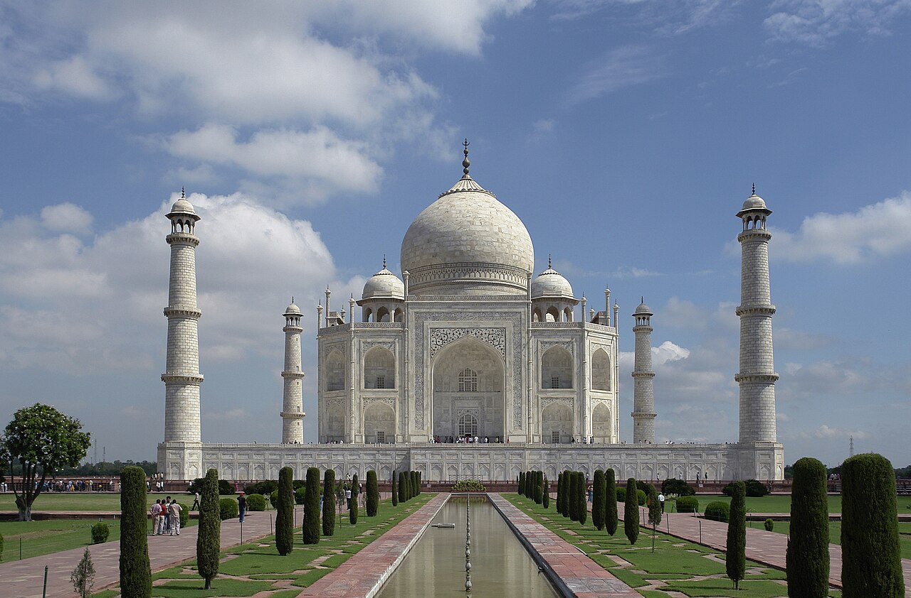

Индия

Индия не прощает полумеры — и награждает тех, кто пришёл целиком. Тадж-Махал на рассвете: белый мрамор розовеет, туман над Ямуной, и вы понимаете, зачем шах Джахан потратил двадцать два года на любовь, которую можно строить. Агра — первый кадр; второй — Джайпур, розовый город с Хава-Махал, где окон больше, чем жителей, и фортом Амбер в горах. Дели задаёт ритм: старый город, мечеть Джама-Масджид, рынок специй, где перец пахнет цветом. Керала — третий темп: хаусбот — дом-лодка на каналах, креветки на кокосе, рисовые поля ниже уровня воды и тишина, за которую вы платите не деньгами, а темпом. Гоа — свои пляжи, южные спокойнее северных. Кухня — вселенная: тали на банановом листе, масала-доса на завтрак, чаи с гор Дарджилинга. Практика: еда там, где очередь местных; вода — только бутилированная. Индия меняет вас сильнее, чем вы её.
Что знать перед поездкой
- Тадж-Махал — к открытию, на рассвете
- Еда там, где очередь местных
- Джайпур в розовом камне смотрится до полудня